JPL历表使用 本来是球面天文学的作业，不过感觉挺有意思，于是打算发出来。
JPL历表介绍 JPL，指的是 Jet Propulsion Laboratory。喷气推进实验室。DE，指的是 Development Ephemeris，星历。使用较为广泛的为DE405，儒略历范围为2305424.5至2525008.5，即为公历1599.12. 09至2201.2.20。包含了八大行星及太阳、月亮、冥王星、日地质心、地月质心、平动章动，可选择为质心或目标从而得出数据。
实验步骤 1.ftp 使用 以Linux系统为例，首先通过open命令连接到ssd.jpl.nasa.gov，采用anonymous匿名登陆。
1 2 $ ftp ftp> open ssd.jpl.nasa.gov
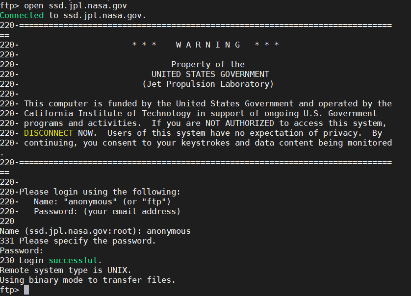
通过cd与ls命令移动至
/pub/eph/planets路径下
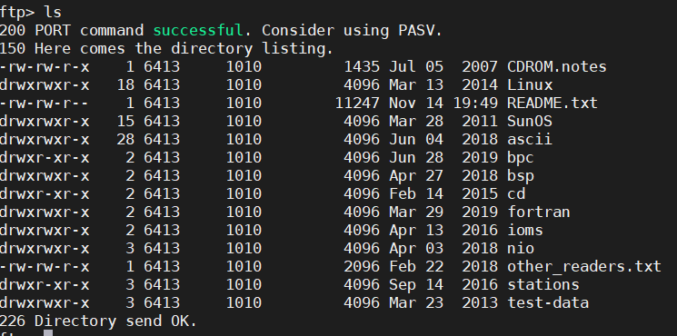
本次实践采用de405星表与Fortran语言，需要的文件路径为：
/pub/eph/planets/ascii/de405
/pub/eph/planets/fortran
采用get或mget命令将其下载至本地。
2.历表制作 以Linux系统为例，将下载的de405中的文件合并，每一个ascp文件代表20年的星表数据，例如ascp2000.405为2000年至2020年的数据。
首先尝试制作2000-2040年星表。
将header.405放在前，生成合并ascii文件。
1 $ cat header.405 ascp2000.405 ascp2020.405 > jpleph00-40
需要对fortran文件夹下asc2eph.f进行编辑，确认NRECL值。用vi编辑器打开。
到文件74、75行，按 i 进入编辑模式，
将其中一项句首用于注释的c删除
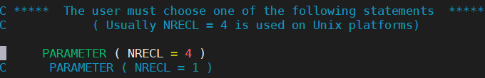
然后按Esc退出编辑模式，
依次输入冒号，wq，enter保存退出。
编译asc2eph.f文件，可通过-o选项指定生成文件名。
1 $ gfortran asc2eph.f -o asc2eph
将先前生成的生成的文件jpleph00-40用其打开：
1 $ ./asc2eph < jpleph00-40
若正常则会返回常数与历表年份等值。
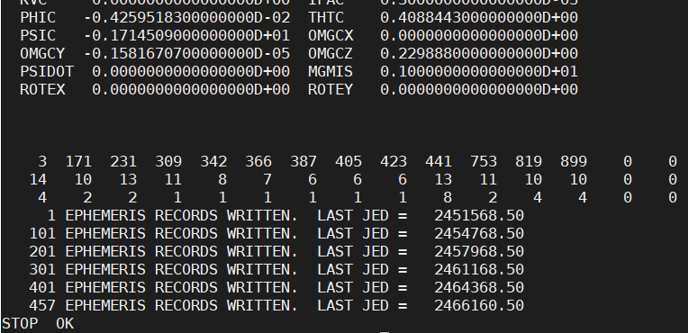
即可发现文件夹下生成了历表文件JPLEPH。
若该过程发生了错误，可能是是NRECL参数设置错误，将其更改后再次重复上述步骤。
Windows系统下过程差别不大，生成制作部分为使用copy命令：
1 copy header.405+ascp2000.405+ascp2020.405 jpleph00-40
3.历表测试 下载文件中/fortran/testeph.f中包含了许多实用的子程序，可将其单独分离出来保存。
首先对testeph.f中未输入的参数进行补全，分别为251、316、388、417行，
前三项为FSIZER1、FSIZER2、FSIZER3的NRECL参数，推荐填写与先前asc2eph.f一样的数值。
417行处填写与采用的星表有关，对于de405填写2036
此外，在939-941行，选择FSIZER三种其中一项，通常Linux采用2，其余采用3。将句首C删除即可。保存。
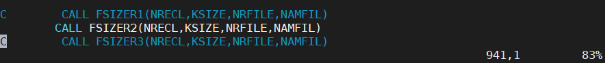
打开testeph.f文件，219行后为子程序即SUBROUTINE部分，将其单独保存，取名为jplsub.f
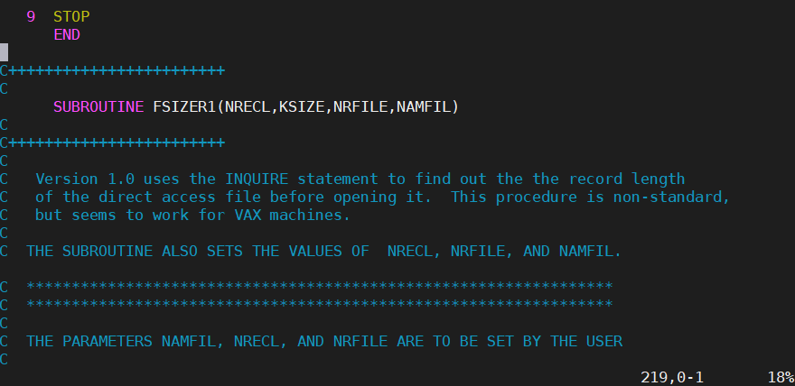
将前面部分保存命名为testeph.f
随后对其进行测试。
1 2 $ gfortran testeph.f jplsubs.f -o test $ ./test
若能读出天文常数则运行成功。
若出现错误，尝试修改CALL FSIZER的选择，或者检查NAMFIL一项是否路径正确的指向了JPLEPH文件。
在接下来的操作中，只需自己编写fortran文件，CALL命令调用PLEPH，由userguide.txt文件可知，通过输入儒略历时间，参考系中心，目标天体，则可返回目标天体的三维位置与速度共六个值。
例如编写了venus.f文件后，
1 2 $ gfortran venus.f jplsubs.f -o venus $ ./venus
则可返回结果。
4.金星凌日计算 原理 以地球为中心，得出同一时刻太阳与金星坐标。
凌日时应该满足条件为
验证 限定时间为2000.1.1至2013.1.1
代码如下
1 2 3 4 5 6 7 8 9 10 11 12 13 14 15 16 17 18 19 20 21 22 23 24 25 26 Intrinsic SQRT ,Acos DOUBLE PRECISION ET DOUBLE PRECISION R1(6 ),R2(6 ) DOUBLE PRECISION AdotB,A,A2,B,B2,cos ,theta,DX ET=2451545.25 DO 10 WHILE (ET.LE.2456293 ) CALL PLEPH(ET,11 ,3 ,R1) CALL PLEPH(ET,2 ,3 ,R2) C distance DX=R1(1 )/R2(1 ) C theta AdotB=R1(1 )*R2(1 )+R1(2 )*R2(2 )+R1(3 )*R2(3 ) A2=R1(1 )*R1(1 )+R1(2 )*R1(2 )+R1(3 )*R1(3 ) B2=R2(1 )*R2(1 )+R2(2 )*R2(2 )+R2(3 )*R2(3 ) A=SQRT (A2) B=SQRT (B2) cos =AdotB/A/B theta=ACOS (cos ) IF (DX.GE.1. AND.theta.LE.0. 0045 ) THEN WRITE (*,*)DX,theta,ET ENDIF ET=ET+0.01 10 CONTINUE END
计算结果为：
1 2 3 4 5 6 3.5635665041421651 4.0037028893135347E-003 2453164.7500241324 3.5182624736303185 3.0341703393880651E-003 2453164.8500241339 3.4733753055714649 4.2455945938335900E-003 2453164.9500241354 3.5506429408527116 4.0684626935557468E-003 2456084.4500676394 3.5127227713096776 2.7091775434967828E-003 2456084.5500676408 3.4750826302577646 3.7145518764713460E-003 2456084.6500676423
可得发生金星凌日
2453164 即为2004.6.7
2456084 即为2012.6.5
预测 制作2000-2200星表，并在代码中修改限定时间2000.1.1至2219.12.31
对代码进行了部分改进。
1 2 3 4 5 6 7 8 9 10 11 12 13 14 15 16 17 18 19 20 21 22 23 24 25 26 27 28 29 30 31 32 33 34 35 36 37 38 39 40 41 42 43 44 45 46 47 48 49 50 51 52 53 54 55 56 57 58 59 60 61 62 63 64 65 66 DOUBLE PRECISION BEGIN,FIN,ET DOUBLE PRECISION R1(6 ),R2(6 ) DOUBLE PRECISION Ls,Lv,L0,k,Rs,Rv,R0,Ra,Rb,Rc c to show output DOUBLE PRECISION DAT(2 ,20 ) INTEGERAL DATX,DATY,i INTEGERAL symold,sym BEGIN=2451545.25 FIN=2524593 Rs=0.0046544 Rv=0.0000406 ET=BEGIN DATX=1 DATY=1 i=1 symold=-1 sym=-1 DO 10 WHILE (ET.LE.FIN) CALL PLEPH(ET,11 ,3 ,R1) CALL PLEPH(ET,2 ,3 ,R2) Ls=(R1(1 )**2 +R1(2 )**2 +R1(3 )**2 )**0.5 Lv=(R2(1 )**2 +R2(2 )**2 +R2(3 )**2 )**0.5 k=Lv/Ls R0=k*Rs+Rv Ra=R2(1 )-k*R1(1 ) Rb=R2(2 )-k*R1(2 ) Rc=R2(3 )-k*R1(3 ) L0=(Ra**2 +Rb**2 +Rc**2 )**0.5 IF (L0.LT.R0.AND.Ls.GT.Lv) THEN sym=1 ELSE sym=-1 ENDIF IF (sym/symold.EQ.-1. AND.sym.EQ.1 ) THEN DAT(int (DATX),int (DATY))=ET DATX=2 symold=sym ENDIF IF (sym/symold.EQ.-1. AND.sym.EQ.-1 ) THEN DAT(int (DATX),int (DATY))=ET DATX=1 DATY=DATY+1 symold=sym ENDIF ET=ET+0.05 10 CONTINUE WRITE (*,*)'begin JED: ' ,BEGIN WRITE (*,*)'fin JED: ' ,FIN 20 IF (i.LT.DATY) THEN WRITE (*,30 )DAT(1 ,int (i)),DAT(2 ,int (i)) 30 FORMAT (1 X,'transit begin:' ,2 X,F18.10 ,5 X,'end:' ,2 x,F18.10 ) i=i+1 GOTO 20 END IF END
计算结果为：
1 2 3 4 5 6 begin JED: 2451545.25 fin JED: 2524593.00 transit begin: 2453164.7299638018 end: 2453164.9699637964 transit begin: 2456084.4398985412 end: 2456084.6898985356 transit begin: 2494622.5190371480 end: 2494622.7190371435 transit begin: 2497542.0789718907 end: 2497542.2689718865
可得下一次发生金星凌日日期：
2494622 即为2117.12.10
2497542 即为2125.12.8
取用第三次凌日结果，用stellarium进行验证：
起始时：
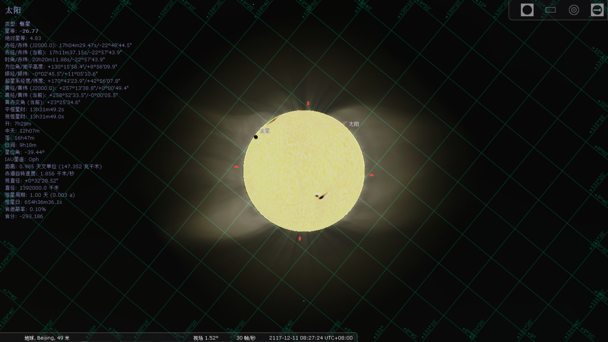
结束时：
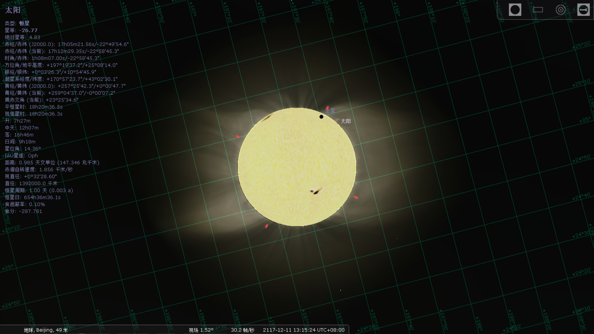
符合精度，较为满意。
5.水星西大距计算 原理 首先利用余弦公式计算出水星与太阳间的夹角。
达到水星西大距时需要同时满足条件
角度一阶导数发生变化
角度大于0.1弧度
距离在保持增加
设定从2020年3月1日开始计算，即为ET=2458910，代码如下
1 2 3 4 5 6 7 8 9 10 11 12 13 14 15 16 17 18 19 20 21 22 23 24 25 26 27 28 29 30 31 32 33 34 35 36 37 38 39 40 41 42 Intrinsic SQRT ,Acos DOUBLE PRECISION ET DOUBLE PRECISION R1(6 ),R2(6 ) DOUBLE PRECISION AdotB,A,A2,B,B2,cos DOUBLE PRECISION theta,theta_old,diff,diff_old,distance_old ET=2458910 theta_old=0.0 diff=0.0 diff_old=0.0 distance_old=0.0 DO 10 WHILE (ET.LE.2459073. 5 ) CALL PLEPH(ET,11 ,3 ,R1) CALL PLEPH(ET,1 ,3 ,R2) AdotB=R1(1 )*R2(1 )+R1(2 )*R2(2 )+R1(3 )*R2(3 ) A2=R1(1 )*R1(1 )+R1(2 )*R1(2 )+R1(3 )*R1(3 ) B2=R2(1 )*R2(1 )+R2(2 )*R2(2 )+R2(3 )*R2(3 ) A=SQRT (A2) B=SQRT (B2) cos =AdotB/A/B theta=ACOS (cos ) diff=theta-theta_old C theta_diff changed and distance start increasing IF ((diff_old/diff).lt.0. AND.theta.ge.0. 1 ) THEN IF (B2.ge.distance_old) THEN WRITE (*,60 ) ET WRITE (*,40 ) R1(1 ),R1(2 ),R1(3 ) WRITE (*,50 ) R2(1 ),R2(2 ),R2(3 ) ENDIF ENDIF C WRITE (*,*) diff,diff_old,ET theta_old=theta diff_old=diff distance_old=B2 ET=ET+0.001 10 CONTINUE 60 FORMAT ('JED:' ,2 X,F18.10 )40 FORMAT ('SUN:' ,2 X,F12.10 ,1 X,F12.10 ,1 X,F12.10 )50 FORMAT ('MER:' ,2 X,F12.10 ,1 X,F12.10 ,1 X,F12.10 ) END
运行结果为
1 2 3 4 5 6 JED: 2458932.5830037016 SUN: 0.9950445886 0.0578015373 0.0250509492 MER: 0.8265519338 -.3318223690 -.1656178090 JED: 2459053.1290234607 SUN: -.5076910850 0.8074487121 0.3500312031 MER: -.1498965712 0.7959517360 0.3068025228
可得第一个时间节点为
2458932.5830037016 即为2020,3,24,上午10点左右
预测 设定结束日期为：2760073
1 2 3 4 5 6 7 8 9 10 11 12 13 14 15 16 17 18 19 20 21 22 23 24 25 26 27 28 29 30 JED: 2458932.5899994951 SUN: 0.9950389406 0.0579122053 0.0250989234 MER: 0.8266901705 -.3317609634 -.1656110652 JED: 2459053.1399968006 SUN: -.5078515791 0.8073627295 0.3499939346 MER: -.1500930060 0.7961490681 0.3069203247 JED: 2459164.2099943180 SUN: -.6563769710 -.6801485087 -.2948375956 MER: -.8639535282 -.4644724426 -.1581085710 JED: 2459279.9799917303 SUN: 0.9619382343 -.2229241616 -.0966403428 MER: 0.7072308631 -.5697382337 -.2555055400 JED: 2459400.3299890403 SUN: -.2244730361 0.9098277591 0.3944067155 MER: 0.1255387507 0.7808173528 0.2892104903 JED: 2459512.7299865279 SUN: -.8458151224 -.4797423888 -.2079617342 MER: -.9528109038 -.2222400107 -.0593147062 JED: 2459627.3799839653 SUN: 0.8366239408 -.4821368972 -.2090054337 MER: 0.5114318459 -.7649120809 -.3263575161 JED: 2459747.1299812887 SUN: 0.0857657159 0.9287035028 0.4025837778 MER: 0.3836725706 0.6880497853 0.2431492146 JED: 2459861.3899787348 SUN: -.9638178379 -.2413447538 -.1046173154 MER: -.9639799525 0.0310228476 0.0408981325 JED: 2459974.7499762010 SUN: 0.6298650625 -.6948439268 -.3012115158 MER: 0.2556276282 -.8942579998 -.3689499921
可见每次水星西大距的间隔约为115天左右。
计算观测方位与时间 JPL星表采用的是ICRS，与经典赤道直角坐标系略有偏差，在此忽略不计。三维坐标xyz满足如下关系：
其中$\delta$为赤纬，$\alpha$为赤经。
计算过程中会产生截断误差，在此忽略不计。参考马文章老师《球面天文学》天体出没的时刻与方位角一章，得到赤经赤纬后可以计算太阳与水星升起时的时角与方位角。
需要注意的是，计算赤经赤纬应用反正弦函数 ，若用反余弦可能会产生正负号错误。
假设太阳刚刚升起时为水星最佳观测时间。
计算太阳升起时的时角
$t$会有正负两个值，对应升起与落下时角。
代入太阳赤经得到太阳升起时的恒星时。
再代入水星赤经得到此时水星的时角。
对于地平坐标与时角坐标转换有：
在此为避免代码堆在一起显示比较混乱，单独编写一个计算观测方位的代码：
1 2 3 4 5 6 7 8 9 10 11 12 13 14 15 16 17 18 19 20 21 22 23 24 25 26 27 28 29 30 31 32 33 34 35 36 37 38 39 40 41 42 43 44 45 46 47 48 49 50 51 52 53 54 55 56 57 58 59 60 61 62 63 64 65 66 67 68 69 70 71 72 73 74 75 76 77 78 79 DOUBLE PRECISION ET DOUBLE PRECISION sun(6 ),mer(6 ) C rho--distance DOUBLE PRECISION rho_m,rho_s C delta--declination/DEC C alpha--right ascension/RA DOUBLE PRECISION alpha_m,delta_m,alpha_s,delta_s C t--time C A--direction C (90 -z)--Horizon height DOUBLE PRECISION t_m,t_s,A_m,t_s_middle,z_m,sinA,cosA,tanA C S--Sidereal time DOUBLE PRECISION S_time DOUBLE PRECISION PI DOUBLE PRECISION phi Intrinsic SQRT ,Acos ,Asin ,cos ,tan ,Atan C WRITE (*,*)'JED when Western Elongation?' C READ(*,*) ET C WRITE (*,*)'local latitude?' C READ(*,*) phi PI=DACOS (-1.D0 ) ET=2458932.5830037016 phi=40.0 /180.0 *PI CALL PLEPH(ET,11 ,3 ,sun) CALL PLEPH(ET,1 ,3 ,mer) rho_s=SQRT (sun(1 )*sun(1 )+sun(2 )*sun(2 )+sun(3 )*sun(3 )) rho_m=SQRT (mer(1 )*mer(1 )+mer(2 )*mer(2 )+mer(3 )*mer(3 )) delta_m=Asin (mer(3 )/rho_m) delta_s=Asin (sun(3 )/rho_s) alpha_m=Asin (mer(2 )/rho_m/cos (delta_m)) alpha_s=Asin (sun(2 )/rho_s/cos (delta_s)) C avoid long sentence t_s_middle=cos (1.71624 )-sin (phi)*sin (delta_s) t_s=Acos (t_s_middle/(cos (phi)*cos (delta_s))) S_time=alpha_s-t_s t_m=S_time-alpha_m z_m=Acos (sin (phi)*sin (delta_m)+cos (phi)*cos (delta_m)*cos (t_m)) SinA=-cos (delta_m)*sin (t_m)/sin (z_m) CosA=cos (phi)*sin (delta_m)-sin (phi)*cos (delta_m)*cos (t_m) tanA=SinA/cosA A_m=Atan (tanA) delta_m=delta_m/PI*180 delta_s=delta_s/PI*180 alpha_m=alpha_m/PI*180 alpha_s=alpha_s/PI*180 S_time=S_time/PI*180 z_m=90 -z_m/PI*180 A_m=A_m/PI*180 t_m=t_m/PI*180 WRITE (*,21 )delta_m,alpha_m WRITE (*,22 )delta_s,alpha_s WRITE (*,23 )S_time WRITE (*,24 )z_m,A_m 21 FORMAT (1 X,'dec_mer:' ,2 X,F18.10 ,5 X,'RA_mer:' ,2 x,F18.10 )22 FORMAT (1 X,'dec_sun:' ,2 X,F18.10 ,5 X,'RA_sun:' ,2 x,F18.10 )23 FORMAT (1 x,'Sidereal time:' ,2 X,F18.10 )24 FORMAT (1 X,'height_mer:' ,2 X,F18.10 ,5 X,'direction_mer:' ,2 x,F18.10 ) END
可得结果
1 2 3 4 dec_mer: -10.5530223236 RA_mer: -21.9558268510 dec_sun: 1.4070427596 RA_sun: 3.2489640863 Sidereal time: -98.8653030050 height_mer: 3.0291127999 direction_mer: -73.5336589870
可得地平高度为$3^\circ17’$，方位角为$106^\circ27’$
用stellarium进行验证，对齐恒星时$-98.865303$，即为$17h24m32s$左右。
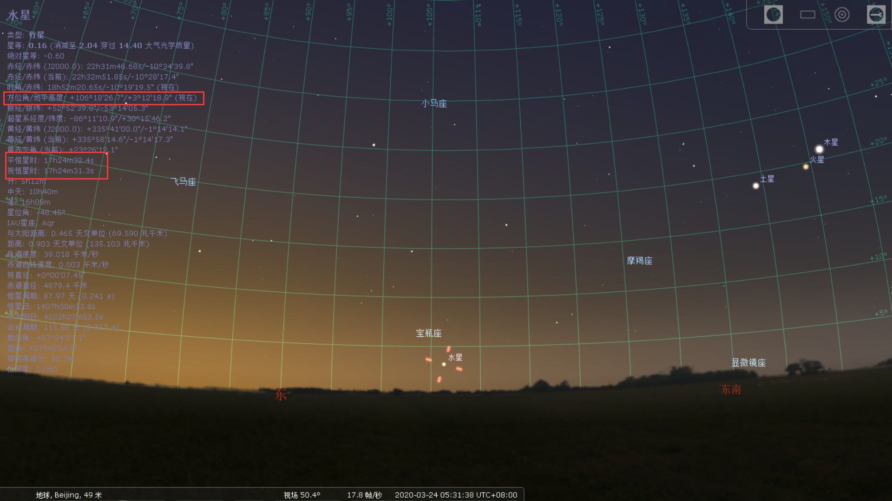
可以发现符合得很好！
结果 金星凌日发生日期:
2453164 即为2004.6.7
2456084 即为2012.6.5
2494622 即为2117.12.10
2497542 即为2125.12.8
最近一次水星西大距：
2458932.583 即为北京时间2020,3,24,上午10点左右
早上5：31观测时地平高度为$3^\circ17’$，方位角为$106^\circ27’$
思考 金星凌日 对于判断思路可以更加提高，觉得队友“本来无一物”的方案就很好，而且试验过后效果显著，其判断思路为：
假设太阳保持圆面大小不变，移动到金星距离
比较两圆圆心距离与圆半径之和
若距离小于半径和则发生凌日
水星西大距判断 对于这一部分感觉思路还行，暂无改进思路
水星观测方位 步骤的关键为确定恒星时作为标准，在这里采用了马文章老师确定太阳升时方法，此刻太阳尚未升起，如图。
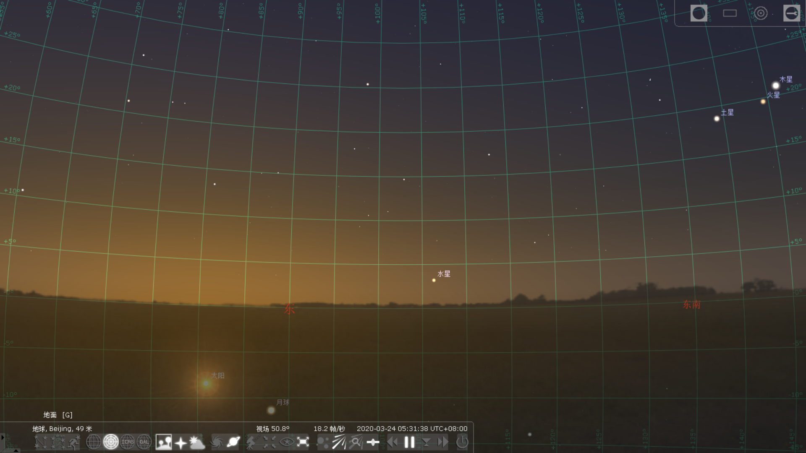
但此刻天空即将亮起，所以此刻可为适宜观测时机。
对于稍有误差可能是由于星表采用的是ICRS，与经典赤道直角坐标系略有偏差，但总体符合得非常好。
更正&思考 在刚才提交的作业版本中，对该部分计算错误。
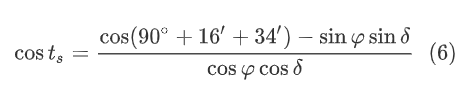
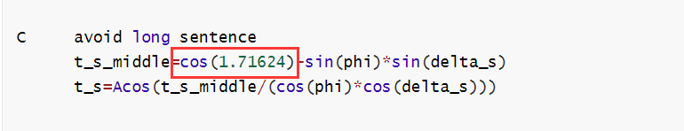
正确值应为$1.58534$重新代入计算。可得结果：
1 2 3 4 dec_mer: -10.5530223236 RA_mer: -21.9558268510 dec_sun: 1.4070427596 RA_sun: 3.2489640863 Sidereal time: -89.0205915397 height_mer: 10.1221527576 direction_mer: -67.2026739354
软件显示为：
可见这次计算才是正确的，太阳即将升起。但是水星却因为天亮了，看不清。
联系晨光始概念：
天文晨光始： $-18^\circ$
航海晨光始：$-12^\circ$
民用晨光始：$-6^\circ$
在此选用民用。
所以可以采用的其他解题思路为：
利用地平坐标与时角坐标变换，设太阳地平高度为$-6^\circ$，代入太阳赤纬与地理纬度，得到此时太阳时角，这里由于太阳还在地平面下，就不用考虑太阳圆面与大气作用了。
利用太阳时角与赤纬，得到此刻恒星时。
由此刻恒星时与水星赤纬，得到水星时角。
由水星时角与地平坐标时角坐标关系，得到水星此刻方位角与地平高度。
利用软件，
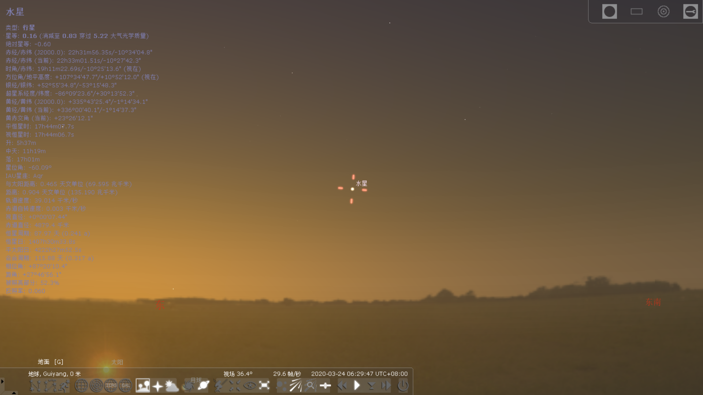
当太阳地平高度为$-6^\circ$时，水星地平高度$10^\circ50’$，方位角$107^\circ34’$
此外，还有改进的地方是需要在代码中添加计算由当地恒星时转换到当地平太阳时的部分。